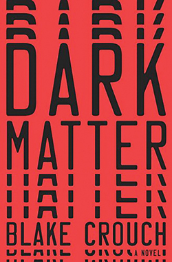

The perfect girl.
--In the aftermath of Murder--
Poster
In as little as 24 hours, your life can irrevocably change. Gilly Macmillan unflinchingly explores this reality in her second novel, The Perfect Girl. A year after publishing her bestselling, Edgar-nominated debut novel, What She Knew, Macmillan captivates readers with a story just as addictive as her first.
The titular “Perfect” girl is 17-year-old genius musician Zoe. Zoe and her mother, Maria, have been outcast from their former community after Zoe was found guilty of driving under the influence and killing three local teenagers, including her best friend. Maria has remarried into what is dubbed the “Second Chance Family,” which includes new husband Chris and his teenage son, Lucas, both oblivious to Zoe and Maria’s marred past. Their lives are intertwined with Sam, Zoe’s former lawyer; Tessa, Zoe’s aunt and Maria’s sister; and Richard, Tessa’s loving yet alcoholic husband.
The relationships in the “Second Chance Family” are fraught with secrets. Brooding Lucas is obviously carrying around the weight of his own past, while Maria maintains a precarious presentation of herself and Zoe to meet the expecations of suspiciously controlling Chris. When Maria is found dead, the thread holding everyone together unravels during the next 24 hours. Having already been institutionalized, Zoe fears she will become the prime suspect, but those closest to Maria and Zoe cannot be discounted as potential murderers.
Macmillan shines when exploring the intricacies of relationships, and the ties that bind this family are strained and complicated indeed. The story is told from the perspective of only three narrators: Zoe, Tessa and Sam. Yet through these lenses, we gain intimate insight into the other characters in whom we have become so invested. Macmillan adeptly demonstrates through her chosen method of storytelling that 24 hours can pass in what seems like a second—or a lifetime.
Macmillan has provided a follow-up novel possibly even better than her first, and fans of Tana French, Ruth Ware and Gillian Flynn will become completely entrenched in the unfolding details.
-Vani Vinod
Dark Matter
--Walking between timelines--
Poster
Physics professor Jason Dessen is content with the life he’s created for himself. Married 15 years to his first true love, he is a proud father to a teenage son and is teaching a subject he adores. But as he toasts the achievement of a fellow scientist on a night out, Jason can’t help but wonder what might have been had he focused on work instead of family. His reflections on the choices that led him to this moment blind him to the approach of an assailant, a stranger who is about to insert him into territory unknown in every sense of the word.
He later awakens in a world where Jason Dessen is a foremost authority in quantum physics, celebrated for his innovation in the exploration of alternate timelines. It’s also a world in which he never married his wife, a place where his son never existed and a reality where his life is threatened by those who want to control his work. Jason knows the odds of finding a way back to his true home, to the singular life that his personal choices generated, are dangerously small. But driven by love, Jason embarks on a terrifying journey to return to the place and the people he belongs with. And he must fight the worst of himself to get there.
Author of the trilogy that inspired the “Wayward Pines” television series, Blake Crouch is a proven master of crafting surreal “what-if” stories set against a landscape of normalcy. In Dark Matter, Crouch draws back the curtain that divides our day-to-day lives from frightening companion timelines, worlds that are just a single choice away from being our own reality.
With a finale that satisfies while leaving the reader with much to reflect on, Dark Matter is a brilliant beacon in the landscape of speculative thrillers.
- Mainak
The Fault in our Stars
--in the persuit for love--

Poster
"I fell in love the way you fall asleep: slowly, then all at once."
Despite the tumor-shrinking medical miracle that has bought her a few years, Hazel has never been anything but terminal, her final chapter inscribed upon diagnosis. But when a gorgeous plot twist named Augustus Waters suddenly appears at Cancer Kid Support Group, Hazel's story is about to be completely rewritten.
Insightful, bold, irreverent, and raw, The Fault in Our Stars is award-winning author John Green's most ambitious and heartbreaking work yet, brilliantly exploring the funny, thrilling, and tragic business of being alive and in love.
'Electric . . . Filled with staccato bursts of humor and tragedy'
'A novel of life and death and the people caught in between, The Fault in Our Stars is John Green at his best. You laugh, you cry, and then you come back for more'